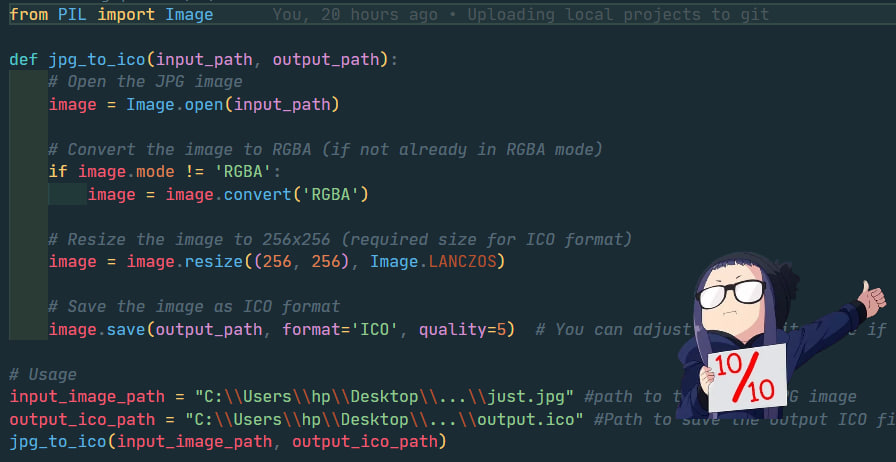
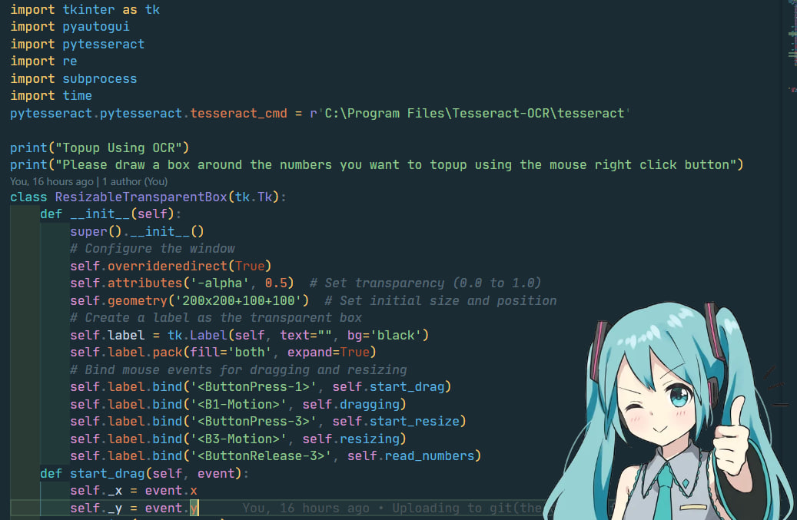
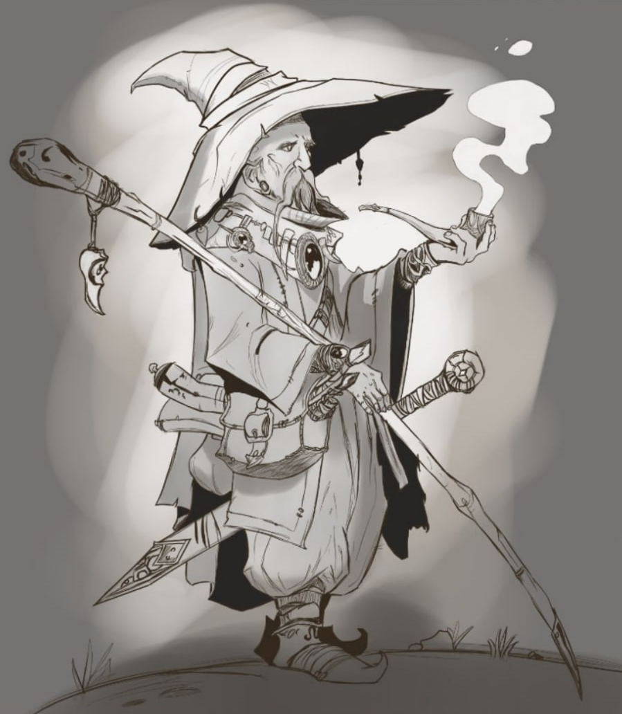

Projects
Image-to-icon
This project converts image files into icons. It was inspired by my need to organize movie images into icons. When online services imposed limitations on free conversions, I created this Python-based solution using the PIL library to automate the process.
Tags: #Script #Python #PIL
Topup from image
This project uses OCR (Optical Character Recognition) to read and extract numeric information from an image, enabling users to top up their accounts automatically. Built with Tkinter, PyAutoGUI, and PyTesseract, it simplifies dialing card numbers directly from the script. If connected to your device via USB with debugging enabled, it uses ADB to handle automation.
Tags: #Script #Python #PyTesseract(OCR) #PyAutoGUI #ADB

Drawing: Old Sage
A drawing that I am proud of.
Tags: #Drawing #Digital #Old_Sage
